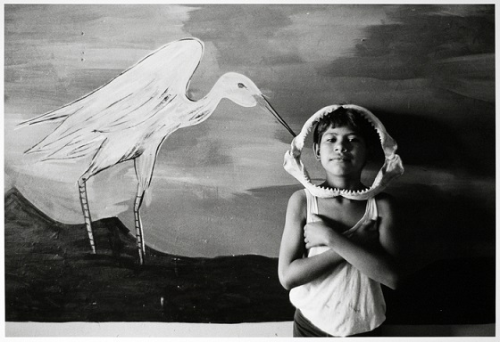

Give the digital camera revolution about ten or fifteen years to stew and now we find ourselves landed here in the present. We trudge knee-deep through swamps of the newest cameras and lenses and any other piece of gear we can dream into reality. Imagine the reaction of Niepce if he saw the ease by which photographs are now taken instantly on the street. No more bulky camera obscuras. Without plates or film or chemicals. Just press the button.
Does this ease of production outweigh the quality of production? Without a doubt, the majority of those 800+ trillion photos we made last year will not be pieces of treasured art or make their way onto the walls of the finest cafe in Paris. At the same time, however, they do fulfill the most basic and primordial purpose of photography. Those pictures preserve a memory. It might not be a far-reaching preservation, but it is preservation nonetheless. This fixing of memory has the potential to give us a measure of happiness within ourselves that is no less satisfying than that felt by the first picture takers over two centuries ago. The difference between us and them, is that we have perhaps become numbed by the very magic they helped to create.
The next evolutionary phase of photography might not be a progression in the way we make images. Instead, it’s quite possible the next unseen horizon will come from the way we share those images with the world or how we store them for ourselves. If a photograph indeed captures a memory, what use is that memory unless it can more tangibly recalled. Looking back in the history of photography has each subsequent advancement not strived to make the photo more qualitative, more lasting, and more real?
